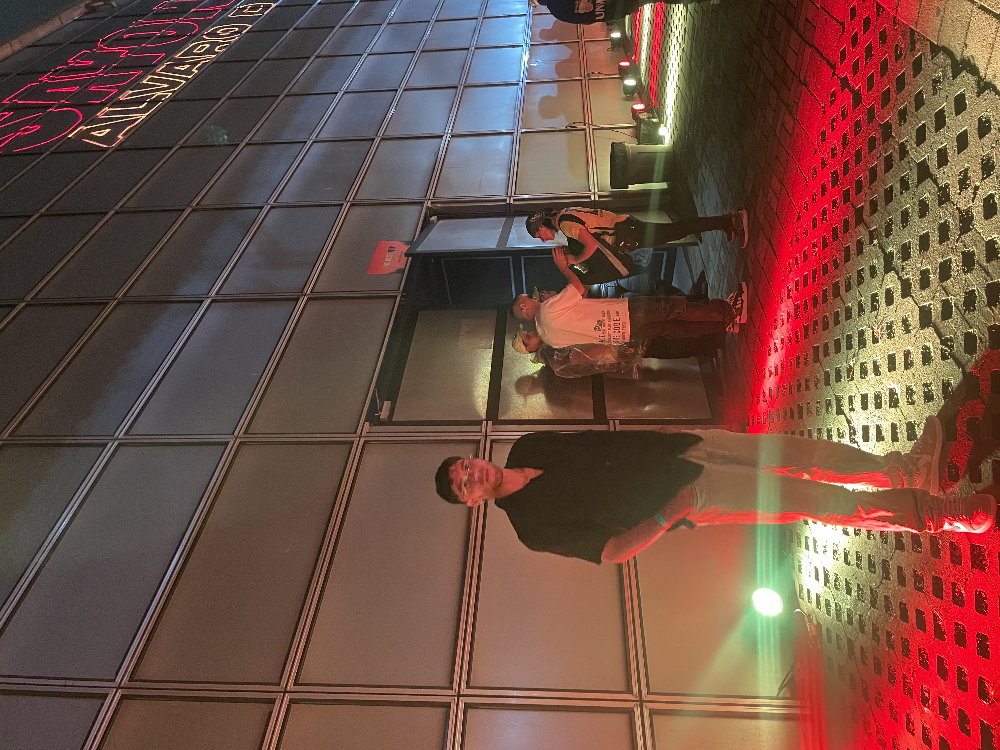

ABOUT ME

Juan Diego Hernández Martínez
Riwi Developer
Hello, I'm Juan Diego and I'm an aspiring programmer with a strong passion for learning new progamming languages and tackling technical challenges. I thrive on problem-solving and constantly seek opportunities to grow and push my limits
Outside the world of programming, I'm a big fan of anime, learning new languages, and sports-each which fuels my creativity, discipline, and appreciation for diverse perspectives. I value perseverance, curiosity, and adaptability, which I belive are essential traits for both personal and professional development.
I'm excited to keep learning, building, and connecting with others who share a passion for technology and innovation.
Education
Riwi Tech Academy
Full Stack Development Program
2025 - Current